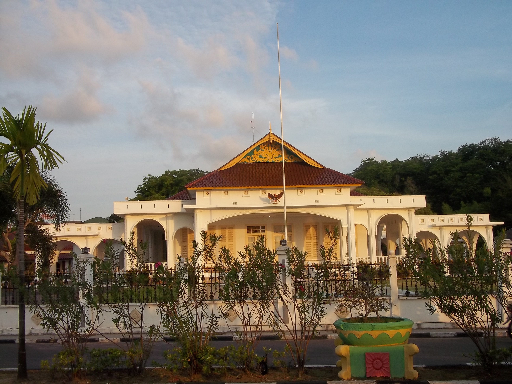
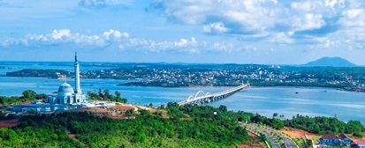
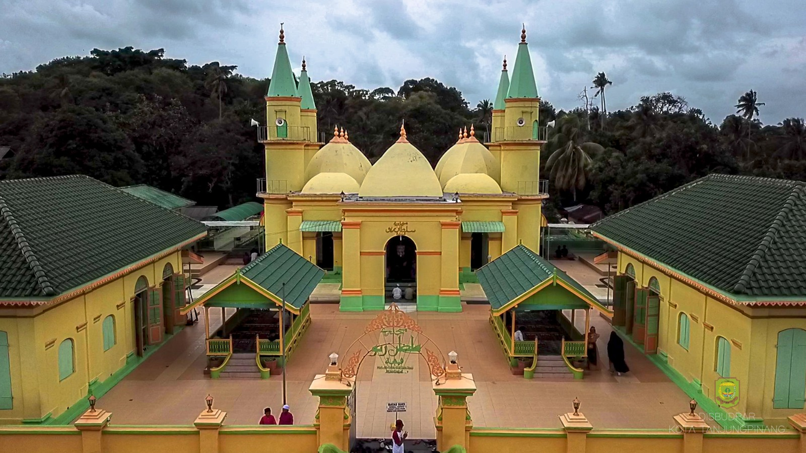
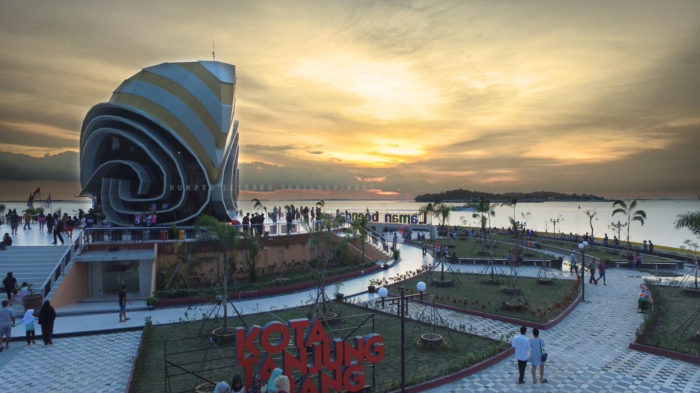

Sejarah

Pada masa Hindia Belanda, Tanjungpinang merupakan pusat pemerintahan Karesidenan Riouw. Kemudian di
awal kemerdekaan Indonesia, menjadi ibu kota Provinsi Riau. Pada tahun 1957, Tanjungpinang menjadi
ibu kota Provinsi Riau. Namun dua tahun kemudian ibu kota propinsi itu dipindahkan ke Pekanbaru.[9]
Setelah itu statusnya menjadi Kota Administratif hingga tahun 2000. Berdasarkan UU Nomor 5 Tahun
2001, pada tanggal 21 Juni 2001 statusnya ditingkatkan menjadi Kota Tanjungpinang. Pusat
pemerintahan yang semula berada di pusat Kota Tanjungpinang, kemudian dipindahkan ke Senggarang
(bagian utara kota). Hal ini bertujuan untuk pemerataan pembangunan serta mengurangi kepadatan
penduduk yang selama ini berpusat di Kota Lama (bagian barat kota). Pada tahun 2002, Kota
Tanjungpinang kembali menjadi ibu kota provinsi, yakni Provinsi Kepulauan Riau.
Geografis

Kota Tanjungpinang berada di Pulau Bintan, Provinsi Kepulauan Riau dengan letak geografis berada
pada 0°51' sampai dengan 0°59' Lintang Utara dan 104°23' sampai dengan 104°34' Bujur Timur. Wilayah
Kota Tanjungpinang memiliki luas wilayah sekitar 239, 5 kilometer persegi dan sebagiannya merupakan
wilayah perairan laut. Sebagian wilayah Tanjungpinang merupakan dataran rendah, kawasan rawa bakau,
dan sebagian lain merupakan perbukitan, sehingga lahan kota sangat bervariasi dan berkontur.
Wisata
Pariwisata di Kota Tanjungpinang ditunjang oleh adanya 8 hotel berbintang, 32 hotel melati, 34
rumah makan dan pusat-pusat belanja yang terdiri dari 13 supermarket serta pertokoan yang tersebar
di wilayah kota. Pada tahun 2014, jumlah kunjungan wisatawan mancanegara sebagian besar berasal dari
Singapura (71,39%) dan diikuti oleh Malaysia (13,71%). Wisatawan dari luar ASEAN terutama berasal
dari Tiongkok (3,31%), India (2,21%) dan Inggris (1,08%).
Pulau Penyengat

Pulau Penyengat merupakan salah satu kawasan wisata di Kota Tanjungpinang. Pulau seluas 3,5 km²
ini berada di sebelah barat Kota Tanjungpinang dan dapat ditempuh 15 menit dengan transportasi
laut. Pada pulau ini terdapat banyak peninggalan lama dengan wujud bangunan yang telah dijadikan
situs cagar budaya.
Tepi Laut

Tepi Laut adalah sebuah waterfront city di Tanjungpinang, Kepulauan Riau. Tepi Laut memberikan pemandangan perairan Selat Riau, Pulau Penyengat, Pulau Paku, Pulau Terkulai, Pulau Los, Senggarang, dan Kampung Bugis. Tepi Laut membentang dari Jalan H. Agus Salim menuju Jalan Hang Tuah dan Jalan Lingkar Gurindam 12 hingga ke Jalan SM. Amin atau Jalan Samudera. Tepi Laut juga merupakan pintu masuk wisatawan yang datang ke Tanjungpinang melalui Pelabuhan Sri Bintan Pura serta pintu masuk menuju Kawasan Kota Lama Tanjungpinang.